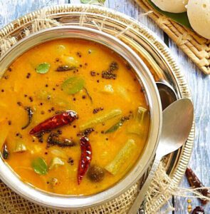

Sambar

Description
Sambar is a South-Indian lenthil based curry dish which is usually paired with rice-based main-courses like dosas and idlis to make it dippable into sambar.
It can be thought of as a thick spicy juice to dip your rice breads or just rice.
Ingredients
Sambar powder base:
- Coriander seeds(Dhaniya)
- Red Chilli
- Toor dal
- Bengal Gram
- Cumin and Fenugreek seeds
- Pepper and Asafoetida
- Turmeric
- Curry Leaves(Optional)
- Mustard
Actual Sambar Ingredients:
- Sambar Powder(from above)
- Tamarind
- Vegetable of your choice(DrumSticks tastes best)
- Water
- Salt
Steps for serving 2 people
- Take a small ball sized tamarind and soak it in water for 15 min
- Take toor dal and cook it for 6 whistles in a pressure cooker
- While it is cooking, cut the veggies of your choice(my pick would be drumstick)
- Medium Fry the vegetables in a pan with seasonings like Mustard,Fenugreek,Asafoetida,Curry Leaves
- Add 100ml water,salt and tamarind water from the 1st step to boil the vegetables for 10 mins
- Now add the already grounded sambar powder to the mix,allow it to boil for another 10 mins
- Now add the dal boiled from the 2nd step and boil it for 10 min
- before or after switching off the stove add some coriander leaves to garnish
- tadaa your authentic sambar is ready, serve hot with rice or dosas